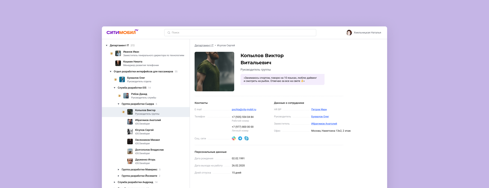
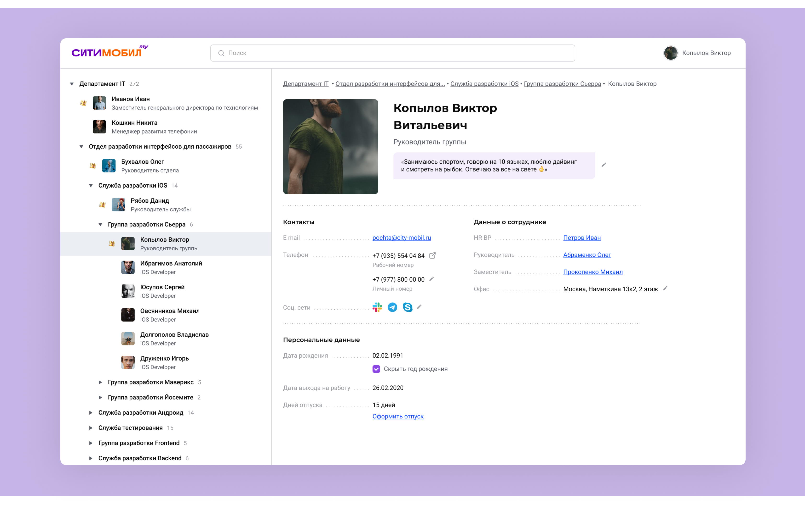
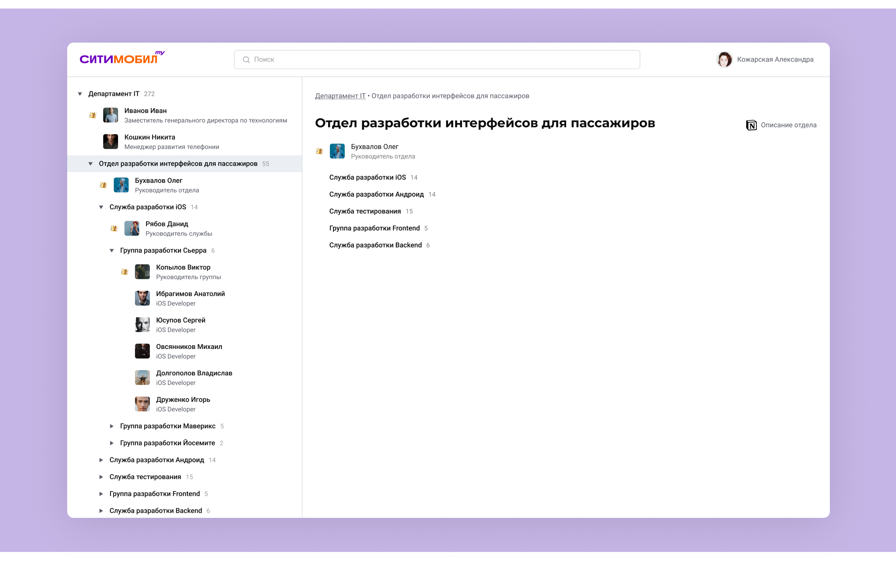
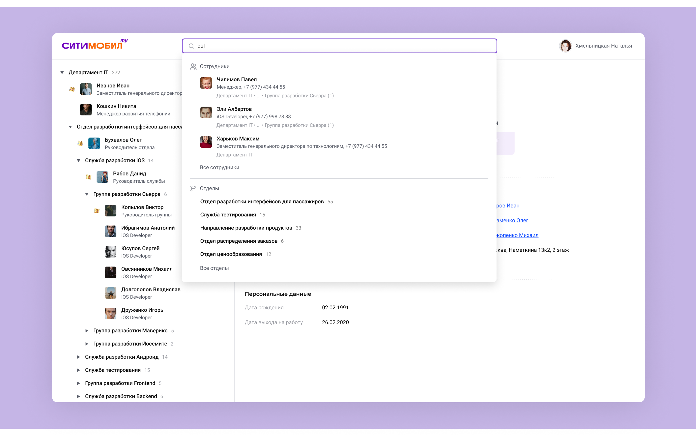
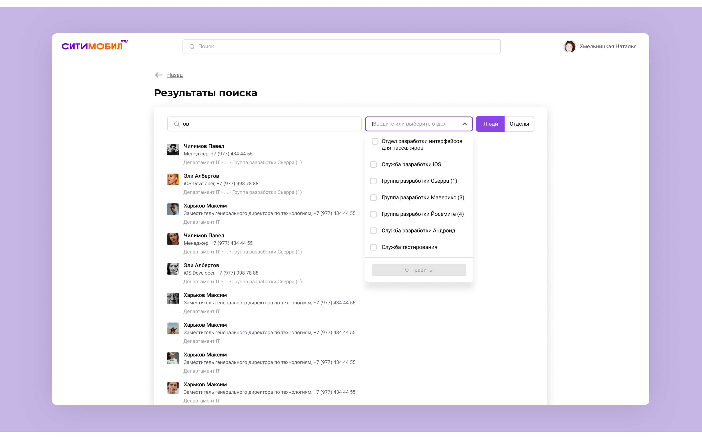

Intranet Интранет
I designed the internal portal for Citymobil employees. Because we were about to switch to a partner-provided intranet, our version had a focused scope and a hard deadline.
Я работала над созданием внутреннего портала для сотрудников Ситимобил. В скором времени мы должны были перейти на интранет от партнёров, поэтому нужен был портал с ограниченным функционалом и конкретной целью.

The Problem
Before the portal existed, there was no single source of information about employees. It lived in Excel sheets and Notion pages — each covered only part of the org, and information was often out of date because updates were manual.
До появления портала не было единого источника, где была бы собрана информация по всем сотрудникам. Были либо Excel-таблицы, либо странички в Notion, но везде была только часть сотрудников, и информация не всегда была актуальна — обновляли вручную.
The Process
We scoped down to four core needs:
- Find a specific person's contacts or someone from a department
- Find an employee's manager, HR BP, and colleagues
- See headcount and structure of current departments
- See and edit your own data
Мы сузили скоуп до четырёх основных задач:
- Поиск контактов конкретного человека или кого-то из отдела
- Поиск руководителя, HR BP и коллег отдельного сотрудника
- Возможность увидеть количество людей и структуру департаментов
- Возможность увидеть и изменить свои данные
The Solution
A convenient profile where each employee can write an intro, take time off, and keep contact info up to date.

The left-hand menu shows the department hierarchy — you can click through to a department page. A manager can attach an optional Notion link.

Search covers both people and departments at once.

In search results, you can toggle between people and departments, and filter people by department.

Сделали удобный профиль, где каждый сотрудник может написать интро о себе, оформить отпуск и оставить актуальные контактные данные.
В левом меню можно посмотреть иерархию отделов и перейти на страницу отдела. Также добавили ссылку на Notion, которую при необходимости мог оставить руководитель.
Поиск ведётся сразу и по сотрудникам, и по отделам.
В результатах поиска можно переключаться между сотрудниками и отделами. При поиске человека можно использовать фильтр по отделам.